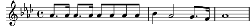

1. C'était un enfant de la Sicile, Angelo
Très bronzé des yeux jusqu'aux chevilles Angelo
Marchant les pieds nus dans la poussière,
Pauvre Frère, Pauvre Frère,
Il rêvait d’être un grand de la terre, Angelo
Il était plutôt par son papa du côté de la maffia
Il était plutôt par sa maman du côté du Vatican
[AT]La religione [SB]Et Al Capone,
[AB]combinazione [Tous]Cosa-Cosi
Un spadassino un assassino un capucino et avanti
2. Mais pour un enfant de la Sicile, Angelo
Il n’existait qu’une seule ville Chicago
Il se décida pour la carrière pouvant plaire à son père
Tout en restant gentil pour sa mère, Angelo
Il partit avec un Beretta qui lui venait de Papa
Et une petite croix d’argent qui lui venait de Maman
[AT]La religione [SB]Et Al Capone,
[AB]combinazione [Tous]Cosa-Cosi
Un spadassino un assassino un capucino et avanti
3. Comme tout enfant de la Sicile, Angelo
Est revenu un jour dans sa ville Angelo
Dégouté de faire des orphelines, et des crimes de routine
Il ne rêvait que de mandoline, Angelo
Aux élections il se présenta pour faire plaisir à papa
Se fit bénir par le Vatican pour faire plaisir à Maman
[AT]La religione [SB]Et Al Capone,
[AB]combinazione [Tous]Cosa-Cosi
Députatione Et religione, combinazione Et avanti
[SA] Un senatore [TB]Et Al Capone
[SA]Un cardinale [TB]Deputatione
[SA] Et Al Capone [TB]Et religione
[SA]Cosa cosi [TB]Cosa cosi
[SA]Deputatione [TB]Et cardinale [SA]Et religione
[Tous]Et viva la combinatoire Et avanti.